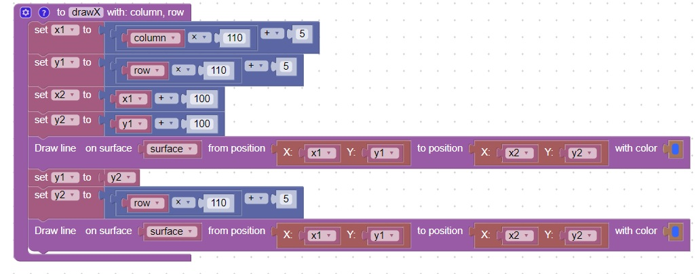

<h1>Function to draw a tic-tac-toe X</h1>
<h2>New Concepts</h2>
   <table border="2px solid">
     <tr><th>Name</th><th>Description</th></tr>
     <tr><td>Function</td><td>Move code that is organized into a group into this reusable function</td></tr>
     <tr><td>Function Call</td><td>Call the function from the main code</td></tr>
     <tr><td>Math : Round Down</td><td>Used to determine column and row from mouse position</td></tr>
   </table>   
<h2>Code</h2>
This code will create a function for the tic-tac-toe game that will draw an X<br>
<br>
<hr>
<center></center>